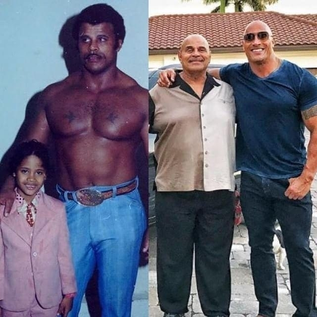
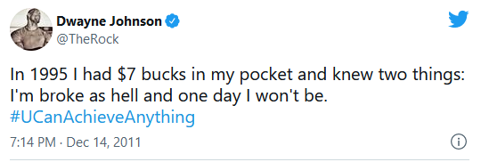
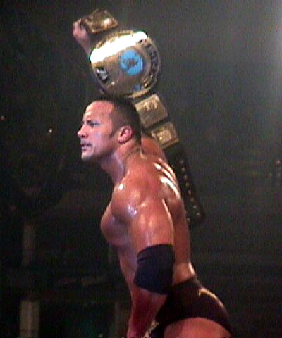

About
Dwayne Douglas Johnson also known by his ring name
The Rock is an American actor, businessman,
and former professional wrestler.
Regarded as one of the greatest professional wrestlers of all time
he wrestled for WWE for eight years prior to pursuing an acting career.
His films have grossed over $3.5 billion in North America
and over $10.5 billion worldwide
making him one of the world's highest-grossing and highest-paid actors
His life
- 1972 - Born in Hayward, California
He is the son of Ata Johnson and Rocky Johnson

(Wayde Douglas Bowles) who is also a professional wrestler.
- 1991 - Championship Victory with the University of Miami
While at the University of Miami, Dwayne Johnson played for the college’s football team.
He won a national championship with the Miami Hurricanes in 1991.
- 1995 - Johnson Plays Canadian Football
He was selected as a player
for the Calgary Stampeders in the Canadian Football League.
Unfortunately, two months into to the 1995 season, Johnson’s time in the league was cut
because of an injury. Nonetheless, Johnson left university
with a Bachelor of General Studies in criminology and psychology.

- 1996 - The Rock Makes His Debut
Dwayne Johnson made his debut appearance in the World Wrestling Federation.
- 1997 - Dwayne Johnson Marries Dany Garcia
They had a daughter four years later. Their daughter’s name is Simone Johnson.
Unfortunately, the two broke up in 2007. The divorce was made official in 2008 .
- 1997 - The Rock Joins the Nation of Domination
- 1998 - The Rock Makes WWF History
The Rock became the youngest world champion after winning the WWF Championship in 1998.
- 2000 - The Rock Wins the Royal Rumble

The Rock as the WWF Champion in 2000
It was also around this time that he published his autobiography titled, “The Rock Says…”
- 2002 - The Rock Stars in His First Movie
After a very successful career in the world of wrestling,
the Rock began to avail himself to the world of acting.
In 2002 he played his first leading acting role in the movie, ‘The Scorpion King’.
- 2003 - The Rock Leaves the WWE to focus on his acting career.